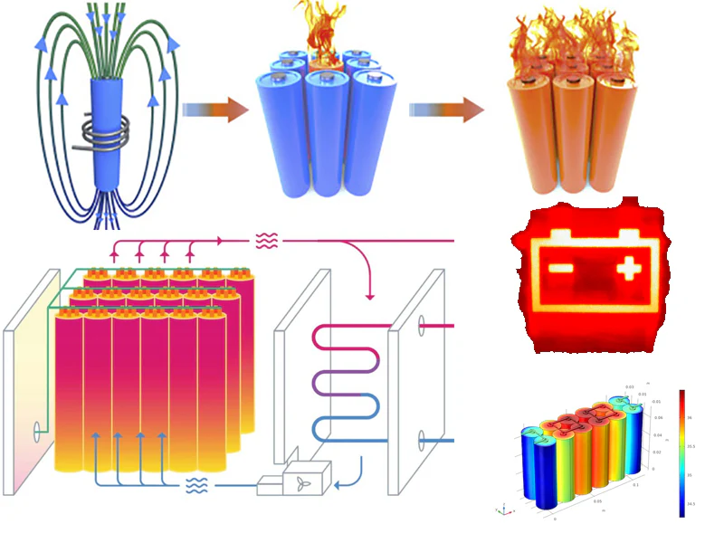
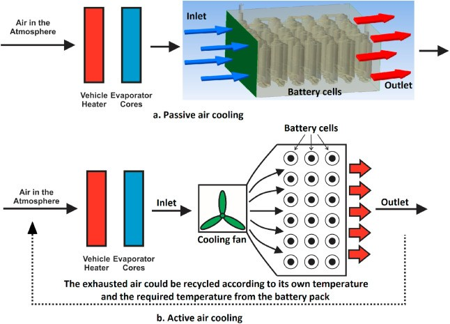
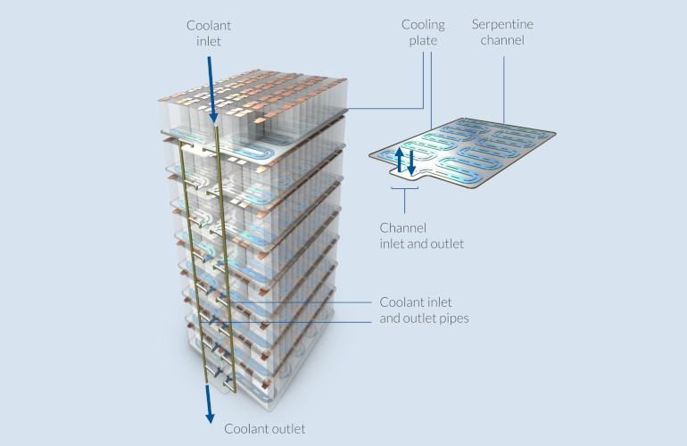
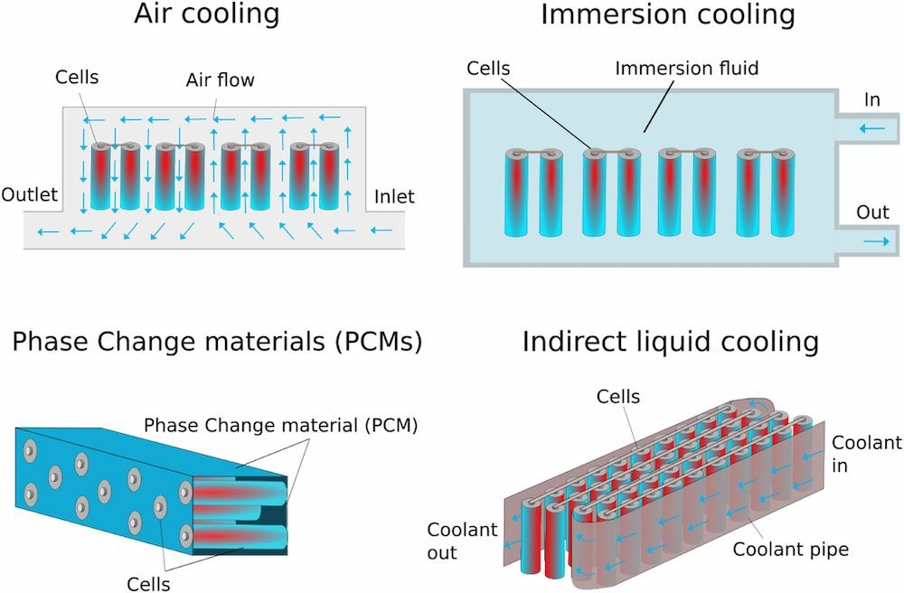
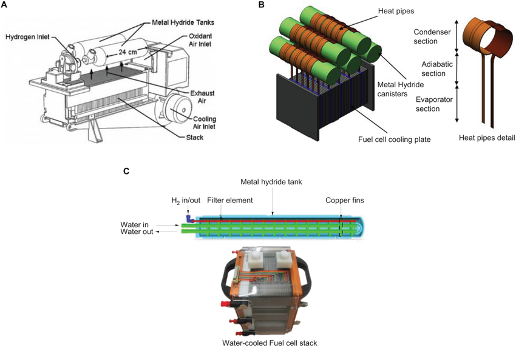
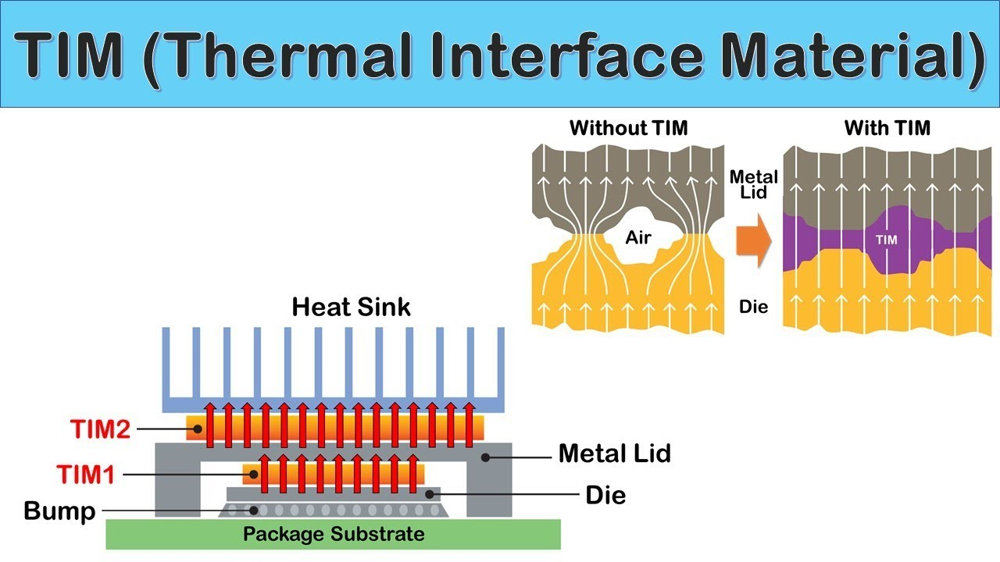
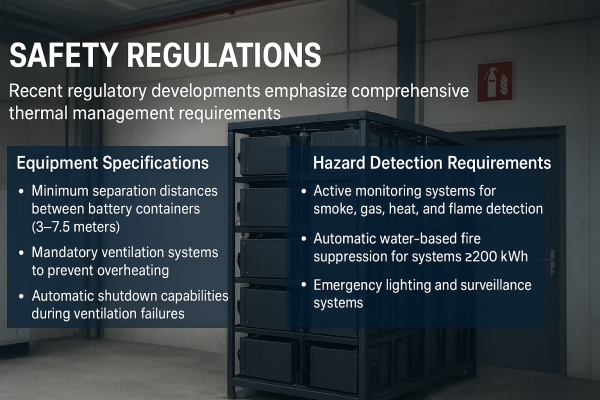
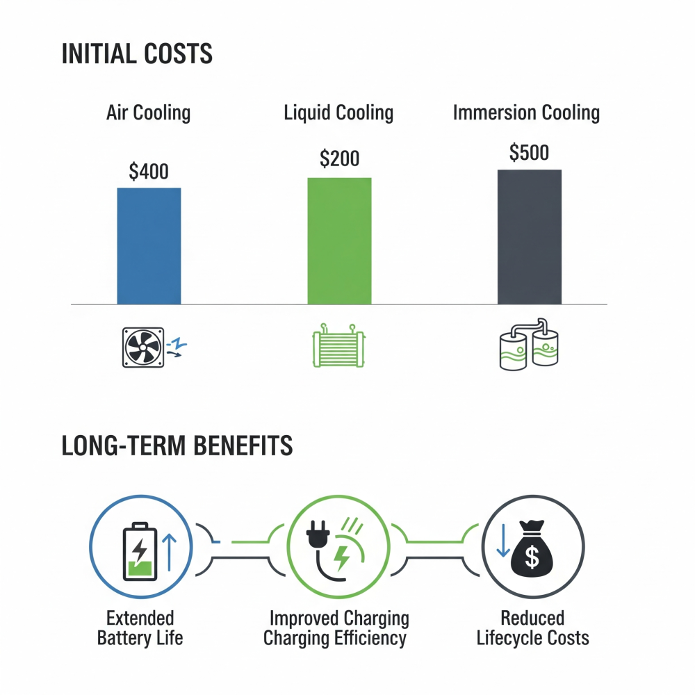
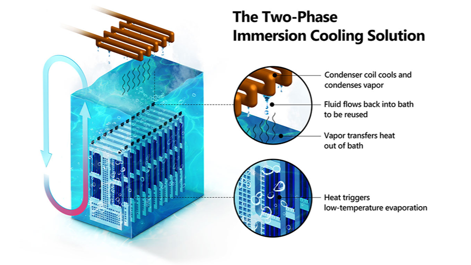

Introduction
Electric vehicle (EV) battery energy storage systems (BESS) are at the forefront of the global transition to sustainable transportation, with the battery thermal management system market projected to reach $7.3 billion by 2030, growing at a CAGR of 12.4%. However, as energy density increases and charging speeds accelerate, thermal management has emerged as one of the most critical engineering challenges facing the EV industry.
Effective thermal management is essential not only for optimal performance and battery longevity but also for safety, as poor thermal control can lead to catastrophic failures including thermal runaway, fires, and explosions.
Understanding Heat Generation in EV-BESS Systems
Primary Heat Sources
EV battery systems generate heat through multiple mechanisms during operation. The primary source is ohmic heating resulting from internal resistance to current flow through electrodes, electrolytes, and connection points. During charging and discharging cycles, lithium-ion batteries can generate heat loads exceeding 3kW, with cell temperatures potentially rising above 45°C. Additionally, electrochemical reactions within cells produce heat, particularly during high-rate operations.

The busbars connecting cells and modules also become significant heat sources due to electrical resistance. Connection points and cell tabs can develop into dangerous hotspots if not properly managed. Furthermore, external factors such as ambient temperature, solar radiation, and heat from other vehicle components contribute to the overall thermal load.
Critical Temperature Requirements
Lithium-ion batteries operate optimally within a narrow temperature range of 15°C to 35°C (59°F to 95°F). Some sources specify an even tighter range of 20-40°C for maximum efficiency. Operating outside these ranges has severe consequences:
High Temperature Effects:
- Accelerated chemical reactions leading to capacity degradation
- Increased risk of thermal runaway above 150-200°C
- Shortened battery lifespan and reduced cycle life
- Compromised safety with potential for fires and explosions
Low Temperature Effects:
- Increased internal resistance reducing power output
- Decreased charging speed and efficiency
- Risk of lithium plating and internal short circuits below 0°C
- Sluggish ion transport and higher resistance
For fast charging applications, batteries should be conditioned to approximately 40°C where internal resistance is lowest, enabling high C-rates with minimal losses.
Thermal Management Technologies
Air Cooling Systems
Air cooling represents the simplest and most cost-effective thermal management approach, utilizing natural or forced convection to dissipate heat.
Advantages:
- Lower initial investment and operational costs
- Simple design with fewer mechanical components
- Easier maintenance and inspection
- Suitable for small-to-medium BESS deployments

Limitations:
- Limited thermal capacity compared to liquid systems
- Ineffective for high-power applications and rapid charging
- Poor temperature uniformity across battery packs
- Inadequate for applications requiring high C-rates
Air cooling is primarily suitable for short-distance travel applications and scenarios with relatively low thermal loads.
Liquid Cooling Systems
Liquid cooling has emerged as the dominant technology for high-performance EV applications, offering superior heat dissipation and temperature control.
System Components:
- Cooling plates: Made from high thermal conductivity materials like aluminum or copper
- Circulation system: Including pumps, channels, and flow management
- Coolant fluid: Typically water-ethylene glycol mixtures similar to conventional automotive cooling
- Control systems: Temperature sensors and automated regulation

Advantages:
- Superior cooling efficiency compared to air systems
- Uniform temperature distribution across battery packs
- Suitable for high-power and fast-charging applications
- Scalable for large battery installations
- Quieter operation than fan-based air cooling
Challenges:
- Higher complexity and initial costs
- Risk of coolant leakage and system maintenance
- Additional power consumption for circulation pumps
Major manufacturers including Tesla utilize advanced liquid cooling systems, with the Model S demonstrating effective temperature control during high-performance driving and fast charging scenarios.
Phase Change Materials (PCM)
Phase change materials offer passive thermal management by absorbing and releasing large amounts of latent heat during solid-liquid phase transitions.
Types of PCMs:
- Paraffin waxes: Widely used due to high heat of fusion and chemical stability
- Salt hydrates: Excellent heat-absorbing properties with high latent heat of fusion
- Non-paraffin organics: Including fatty acids with better thermal conductivity
Advantages:
- Passive operation requiring no external power
- Excellent temperature uniformity within phase change range
- High latent heat storage capacity
- Suitable for applications with constant thermal loads

Limitations:
- Low thermal conductivity (typically 0.2 W/m·K for paraffin)
- Challenges with heat accumulation during high-rate operations
- Sensitivity to vibrations in mobile applications
- Complex integration and higher material costs
To address thermal conductivity limitations, researchers incorporate additives such as expanded graphite, metal compounds, and nanoparticles, achieving up to 30% reduction in temperature gradients.

Immersion Cooling Technology
Immersion cooling represents the cutting-edge advancement in battery thermal management, involving direct submersion of battery cells in dielectric fluids.
Key Benefits:
- Superior thermal performance: Up to 20 times higher than cold plate technologies
- Ultra-fast charging: Enabling full charge in less than 10 minutes
- Enhanced safety: Virtually eliminates thermal runaway risks
- Extended battery life: Stable operating temperatures reduce thermal stress
- Simplified system design: Fewer mechanical components than conventional cooling
Cost and Design Advantages:
- Reduced manufacturing complexity with fewer parts
- Enables smaller battery pack designs without excess capacity margins
- Lower weight contributing to improved overall efficiency
- Potential for 50% reduction in carbon footprint compared to aluminum cooling systems
Companies like Valeo, in partnership with TotalEnergies, and specialized firms like Exoes are pioneering immersion cooling solutions for commercial EV applications.
Hybrid Energy Storage Systems (HESS)
Recent research has introduced hybrid energy storage systems that integrate battery packs with metal hydride tanks and phase change materials for enhanced thermal regulation.
This innovative approach leverages:
- Metal hydride tanks: Providing passive thermal regulation through endothermic hydrogen release and exothermic absorption
- Enhanced PCM composites: With improved thermal conductivity through additives
- Passive thermal management: Reducing energy consumption compared to active cooling methods

Thermal Interface Materials (TIM)
Thermal interface materials play a crucial role in heat transfer between battery cells and cooling systems, addressing production tolerances and ensuring consistent thermal connections.
Key TIM Categories:
- Thermal paste and adhesives
- Gap fillers and conductive pads
- Thermal tapes and potting compounds

Critical Properties:
- High thermal conductivity for efficient heat transfer
- Electrical insulation to prevent short circuits
- Compliance to accommodate surface irregularities
- Chemical resistance and stability over battery lifetime
The transition from modular cell-to-pack designs to structural cell-to-chassis architectures is driving a shift from gap fillers to adhesive TIM solutions.
Safety and Thermal Runaway Prevention
Understanding Thermal Runaway
Thermal runaway represents the most severe thermal management failure, occurring when battery internal temperature rises uncontrollably, typically above 150-200°C. This process involves:
- Initial trigger: Overheating, physical damage, or electrical abuse
- Chemical decomposition: Breakdown of electrolyte and SEI layer
- Heat and gas generation: Release of flammable gases and additional heat
- Propagation: Spread to adjacent cells in a cascading failure
- Catastrophic failure: Potential fire, explosion, and toxic gas release

Prevention Strategies
Advanced Thermal Management Systems:
- Sophisticated liquid cooling with precise temperature control
- Heat exchangers and cooling plates for efficient heat dissipation
- Real-time monitoring and adaptive cooling algorithms
Material Solutions:
- Insulation materials: Mica barriers to prevent heat propagation between cell
- Fire-resistant separators: Materials with UL 94 V-0 fire resistance ratings
- Thermal barriers: Preventing cascade failures across battery modules
System Design Approaches:
- Modular battery pack designs for thermal isolation
- Proper spacing and separation between cells and modules
- Early detection systems with temperature, smoke, and gas sensors
Regulatory Standards and Safety Requirements

International Standards
Battery thermal management systems must comply with various international safety standards:
- IEC 62619: Testing thermal propagation in BESS systems
- UL 9540A: Standard test methods for evaluating thermal runaway fire propagation
- CE/UL certifications: Required for worldwide operations of thermal management systems
Safety Regulations
Recent regulatory developments emphasize comprehensive thermal management requirements:
Equipment Specifications:
- Minimum separation distances between battery containers (3-7.5 meters)
- Mandatory ventilation systems to prevent overheating
- Automatic shutdown capabilities during ventilation failures

Hazard Detection Requirements:
- Active monitoring systems for smoke, gas, heat, and flame detection
- Automatic water-based fire suppression for systems ≥200 kWh capacity
- Emergency lighting and surveillance systems
Economic Considerations and Market Trends
Cost Analysis
The economic viability of thermal management systems depends on balancing initial investment against long-term benefits:
Initial Costs:
- Air cooling: Lowest initial investment but limited performance
- Liquid cooling: Higher upfront costs but superior performance for demanding applications
- Immersion cooling: Potentially lower total system costs due to simplified design

Long-term Benefits:
- Extended battery life reducing replacement costs
- Improved charging efficiency and reduced energy losses
- Hybrid systems demonstrating 25-30% reduction in lifecycle costs with 36% life extension
Market Growth
The battery thermal management market is experiencing rapid expansion driven by:
- Increasing EV adoption and stricter emission regulations
- Growing demand for faster charging capabilities
- Rise of micro-mobility solutions requiring efficient thermal management
- Integration of IoT capabilities for predictive maintenance and optimization
Future Trends and Innovations
Advanced Materials and Technologies
Nanomaterials Integration:
- Graphene and carbon nanotube enhancement for improved heat transfer
- Advanced PCM composites with higher thermal conductivity
Next-Generation Cooling Methods:
- Thermoelectric cooling using Peltier effects
- Magnetic cooling technologies for specialized applications
- Two-phase cooling systems with enhanced heat transfer coefficients

Smart Thermal Management
IoT Integration:
- Real-time monitoring and predictive maintenance capabilities
- Machine learning algorithms for adaptive cooling strategies
- Remote diagnostics and performance optimization
System Integration:
- Unified thermal management for complete vehicle systems
- Heat pump integration for cabin heating and battery conditioning
- Waste heat recovery for improved overall efficiency
Conclusion
Thermal management in EV-BESS systems represents one of the most critical challenges facing the electric vehicle industry today. As energy densities increase and charging speeds accelerate, the demand for sophisticated thermal management solutions continues to grow. While traditional air cooling systems remain suitable for basic applications, the industry is rapidly transitioning toward advanced liquid cooling and emerging immersion cooling technologies.